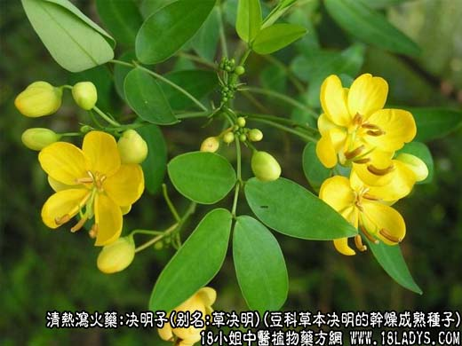
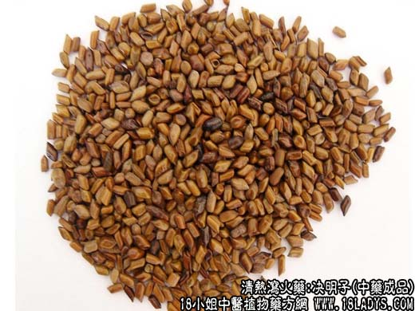
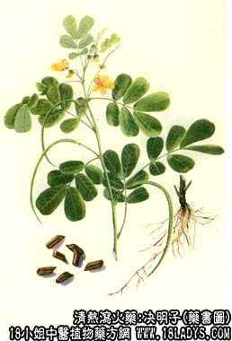

本品为常用中药，始载《神农本草经》，列为上品。原名决明。
别名：马蹄决明，草决明。
来源：本品为豆科一年生草本植物决明的干燥成熟种子。多为栽培。
产地：全国各地。
性状鉴别：种子类圆柱形，似马蹄，两端斜截，一端有小尖（种脐），长5～7毫米，直径2.5～3毫米，表面棕色褐色或青绿色，平滑有光泽，两面各有一条颜色较浅的条纹，质坚，不易破碎，横切面可见胚乳灰白色至淡黄色，子叶黄色或暗棕色，强烈折迭而皱缩。味淡微苦，嚼之有豆腥气。以颗粒均匀，饱满，棕褐色者为佳。
功效与作用：由于有消炎和泻下作用，故能祛风热、明目、通便，其明目作用还可能与所含的胡萝卜素（甲种维生素类物质）有关。现代实验还发现决明子有降血压作用。
炮制：炒用。
性味：甘苦咸，微寒。
归经：入肝，胆经。
功能：清肝益肾，明目，通便。
主治：头痛，目赤，昏暗不明，内热便秘。
临床应用：本品广泛用于眼科。无论内眼或外眼炎症，只要无禁忌证（如泄泻、低血压等），在方剂内加入决明子一味，都属有益。但现代临床上主要用于急性外眼炎症。
1、用于治疗由风热所致的目赤涩痛、羞明、多泪（急性结膜炎、流行性角结膜炎）。一般配菊花、木贼、黄芩等，如急结炎方；症状较剧烈者则须配柴胡、黄连、防风等，方如决明子汤。
2、用于治疗用肝阳上亢所致的高血压头痛。单用决明子15g，或配夏枯草15g，或配钩藤、白疾藜各9g，水煎服。
3、用于治疗便秘（兼有目赤、口臭、小便短赤等热象者较适宜）。可配淡竹叶、瓜萎仁各9g，水煎服。
此外，传统经验认为决明子在清热当中，又略带补性（可能与含有甲种维生素类物质有关），能滋益肾水，故亦用于肾虚所致的头痛目暗（属某些内眼病），但须配杞子、甘菊花等。
使用注意：有泄泻和低血压者忌用。
用量：4.5～24g，常用量9～15g。
处方举例：决明子汤：决明子（炒黄）9g，柴胡9g，黄连6g，淡竹叶9g，防风6g，升麻3g，细辛1.5g，菊花9g，甘草3g，水煎服。